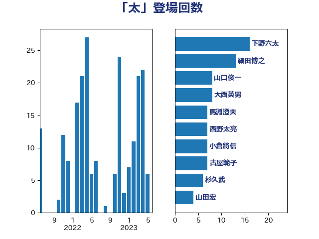

単語「太」

| 下野六太 | 公明党 | 16 回 |
| 細田博之 | 自由民主党 | 13 回 |
| 山口俊一 | 自由民主党 | 8 回 |
| 大西英男 | 自由民主党 | 8 回 |
| 馬淵澄夫 | 立憲民主党 | 7 回 |
| 西野太亮 | 自由民主党 | 7 回 |
| 小倉將信 | 自由民主党 | 7 回 |
| 古屋範子 | 公明党 | 7 回 |
| 杉久武 | 公明党 | 6 回 |
| 山田宏 | 自由民主党 | 4 回 |
| 大塚拓 | 自由民主党 | 4 回 |
| 城内実 | 自由民主党 | 4 回 |
| 阿達雅志 | 自由民主党 | 3 回 |
| 関芳弘 | 自由民主党 | 3 回 |
| 矢倉克夫 | 公明党 | 3 回 |
| 根本匠 | 自由民主党 | 3 回 |
| 松野博一 | 自由民主党 | 3 回 |
| 末松信介 | 自由民主党 | 3 回 |
| 奥野総一郎 | 立憲民主党 | 3 回 |
| 鷲尾英一郎 | 自由民主党 | 2 回 |
| 鶴保庸介 | 自由民主党 | 2 回 |
| 長峯誠 | 自由民主党 | 2 回 |
| 野田国義 | 立憲民主党 | 2 回 |
| 茂木敏充 | 自由民主党 | 2 回 |
| 滝沢求 | 自由民主党 | 2 回 |
| 海江田万里 | 立憲民主党 | 2 回 |
| 河野義博 | 公明党 | 2 回 |
| 斎藤嘉隆 | 立憲民主党 | 2 回 |
| 平口洋 | 自由民主党 | 2 回 |
| 島尻安伊子 | 自由民主党 | 2 回 |
| 岸田文雄 | 自由民主党 | 2 回 |
| 尾辻秀久 | 無所属 | 2 回 |
| 小林鷹之 | 自由民主党 | 2 回 |
| 古賀之士 | 立憲民主党 | 2 回 |
| 古川俊治 | 自由民主党 | 2 回 |
| 下条みつ | 立憲民主党 | 2 回 |
| 三浦信祐 | 公明党 | 2 回 |
| 三原じゅん子 | 自由民主党 | 2 回 |
| 黄川田仁志 | 自由民主党 | 1 回 |
| 須藤元気 | 無所属 | 1 回 |
| 階猛 | 立憲民主党 | 1 回 |
| 長島昭久 | 自由民主党 | 1 回 |
| 野村哲郎 | 自由民主党 | 1 回 |
| 遠藤良太 | 日本維新の会 | 1 回 |
| 道下大樹 | 立憲民主党 | 1 回 |
| 赤羽一嘉 | 公明党 | 1 回 |
| 藤川政人 | 自由民主党 | 1 回 |
| 義家弘介 | 自由民主党 | 1 回 |
| 笹川博義 | 自由民主党 | 1 回 |
| 石原宏高 | 自由民主党 | 1 回 |
| 石井浩郎 | 自由民主党 | 1 回 |
| 田野瀬太道 | 無所属 | 1 回 |
| 猪瀬直樹 | 日本維新の会 | 1 回 |
| 浮島智子 | 公明党 | 1 回 |
| 池下卓 | 日本維新の会 | 1 回 |
| 林芳正 | 自由民主党 | 1 回 |
| 松村祥史 | 自由民主党 | 1 回 |
| 杉本和巳 | 日本維新の会 | 1 回 |
| 杉尾秀哉 | 立憲民主党 | 1 回 |
| 本田顕子 | 自由民主党 | 1 回 |
| 掘井健智 | 日本維新の会 | 1 回 |
| 後藤茂之 | 自由民主党 | 1 回 |
| 平木大作 | 公明党 | 1 回 |
| 小西洋之 | 立憲民主党 | 1 回 |
| 小田原潔 | 自由民主党 | 1 回 |
| 小熊慎司 | 立憲民主党 | 1 回 |
| 安江伸夫 | 公明党 | 1 回 |
| 太田房江 | 自由民主党 | 1 回 |
| 太栄志 | 立憲民主党 | 1 回 |
| 大野泰正 | 自由民主党 | 1 回 |
| 堤かなめ | 立憲民主党 | 1 回 |
| 加藤勝信 | 自由民主党 | 1 回 |
| 佐藤正久 | 自由民主党 | 1 回 |
| 伊藤俊輔 | 立憲民主党 | 1 回 |
| 中谷一馬 | 立憲民主党 | 1 回 |
| 上野賢一郎 | 自由民主党 | 1 回 |
| 三谷英弘 | 自由民主党 | 1 回 |